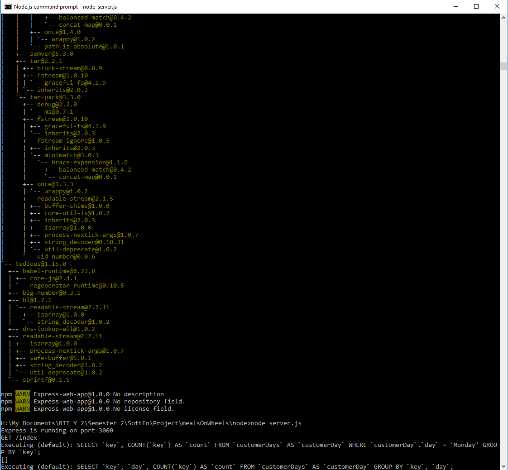
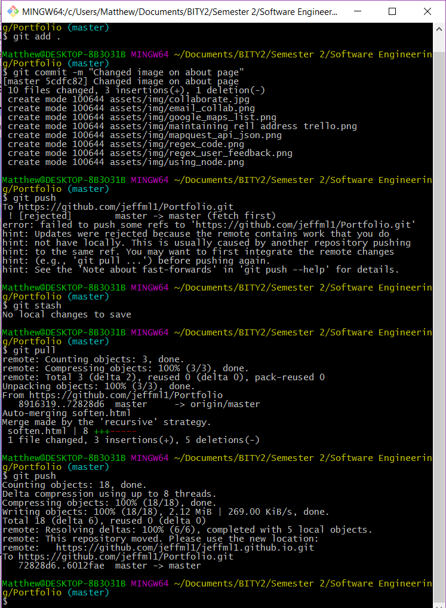
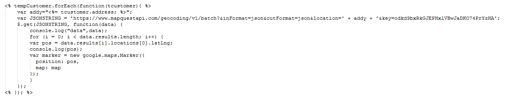
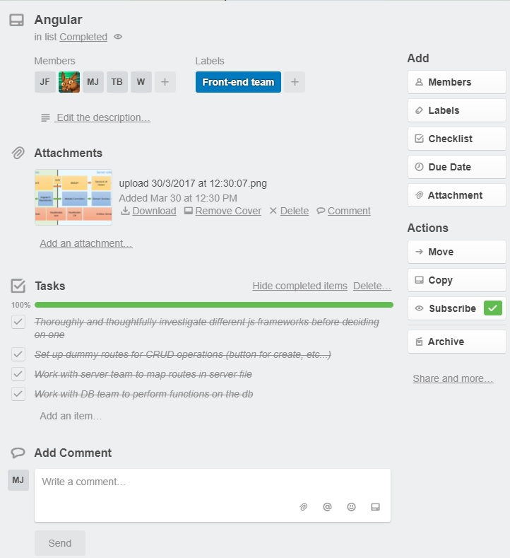
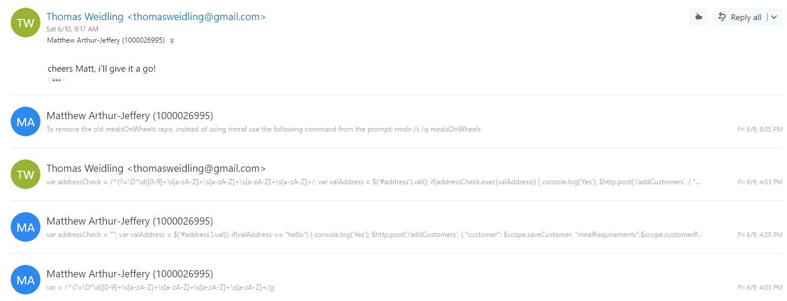
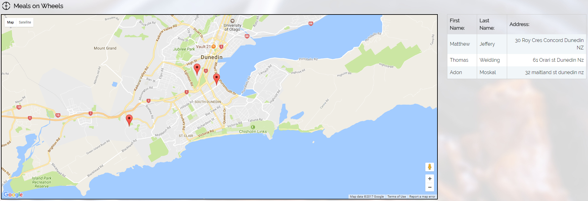
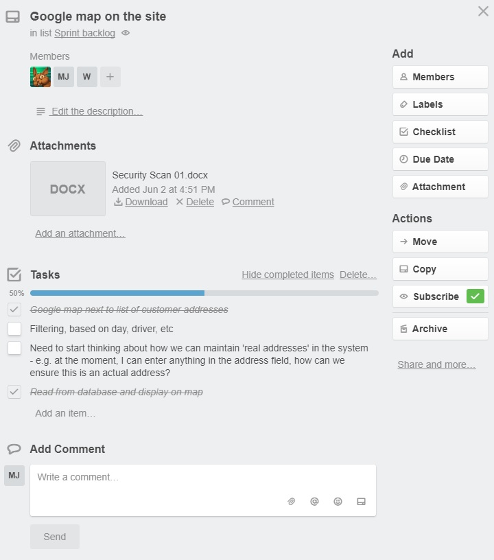
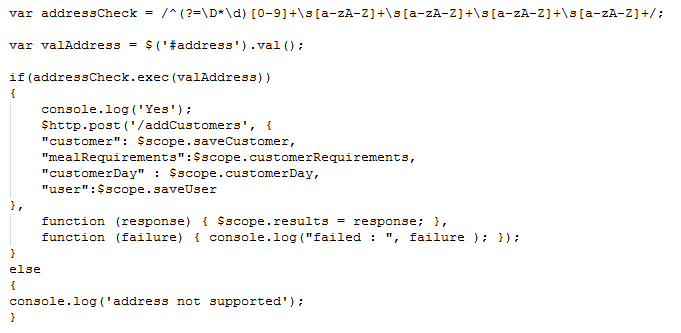
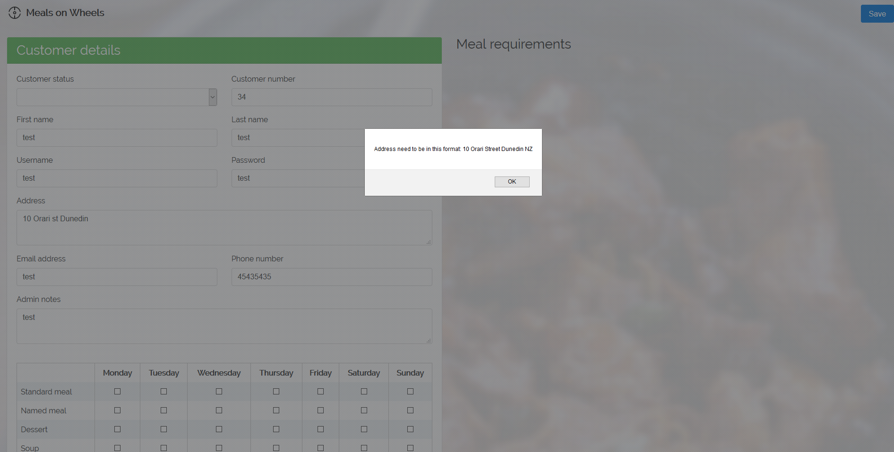
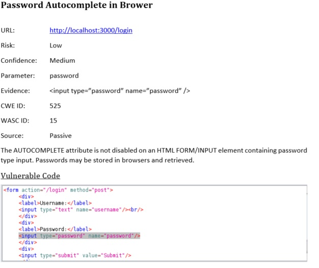

This year in Software Engineering we are building an application for the Meals on Wheels programme, run by the St. Barnabas Trust. Initially, I believed the project would be somewhat trivial, even to the point of having to find another project to fill the semester. However, I quickly realised how complex even seemingly simple applications can become, particularly when attempting to build it in a large development team.
Working with Node.js command prompt to initialise the web application and creating the database along with installing the required tools to implement the server, refer to the image below.
Software Engineering gave me an in depth understanding of using version control with GitHub. I am now able to pull, push, merge, stash, commit and change branches effectively when needed. An example of me stashing and pushing my local repository to the remote repository can be seen in the image below.
Using Angular my team and I were able to make JSON calls for fetching data about addresses in the world and getting their longitude and latitude values and using those values could assign a marker to the Google Map's API map. An example of the code we used to implement this can be seen below.
Working with Trello Angular team.
An example of me collaborating with my team outside of working hours to help them resolve an issue they were having and to share our thoughts on how the code we wanted to implement would work.
Progressing through the Google Maps API for the web page.
Managed to display a list of the customers with addresses beside the google map
Completing tasks on Trello for Google Maps page.
One of the tasks on Trello needed my team and I to think about how we are going to maintain real addresses in the database as a certain format was needed for the address in order for it to operate with Google Maps.
We decided to use Regular Expressions to check user input for entering in your address in the proper format. In the image below you can see the code we came up with to implement this feature.
Proper feedback was implemented so the user understand why their address was invalid.
Managed to display a list of the customers with addresses beside the google map
After recieving the Security_scan_01 document from another team mate...
Predicted resolutions to the problems in the Web App security vulnerabilities:
To resolve the Autocomplete password prediction in the login page i added the following code to the input html password element:
'autocomplete=off'
To resolve the XSS Protection not being enabled I recommend including the DOMPurify library to sanitize the login input.
The X-Content-Type-Options header missing error can be resolved by modifying the vulnerabile user input file's 'head' element and adding 'Header set-X-Content-Type-Options nosiff'.
